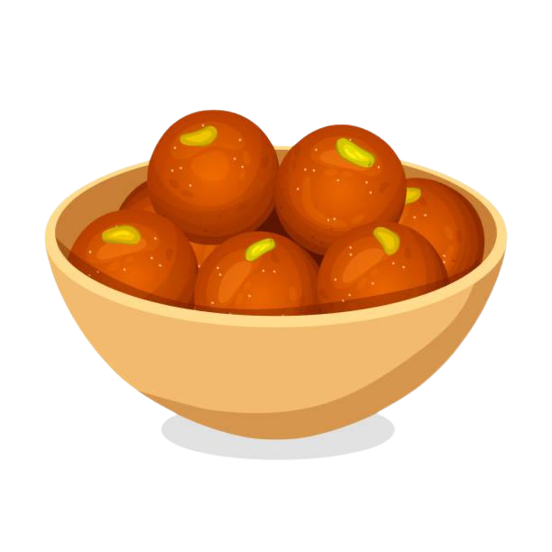

Gulab Jamun Recipe
Deep-fried milk-based dumplings soaked in sugar syrup.
Ingredients
For the Dough:
- 1 cup (120g) milk powder
- 1/4 cup (30g) all-purpose flour
- 1/8 teaspoon baking soda
- 2 tablespoons ghee (clarified butter)
- 2-3 tablespoons milk (warm, for kneading)
For the Sugar Syrup:
- 2 cups sugar
- 2 cups water
- 4-5 cardamom pods, crushed
- 1/2 teaspoon rose water or a few drops of rose essence (optional)
- A few saffron strands (optional)
For Frying:
- Ghee or oil, for deep frying
Preparation Time
- Prep time: 20 minutes
- Cook time: 30 minutes
- Total time: ~50 minutes
Instructions
- Prepare the Sugar Syrup:
- In a saucepan, combine sugar and water. Heat over medium heat, stirring occasionally, until the sugar dissolves.
- Add crushed cardamom pods, rose water, and saffron (if using). Simmer the syrup for 8-10 minutes until slightly thickened. Keep it warm.
- Make the Dough:
- In a bowl, mix milk powder, flour, and baking soda. Add ghee and mix until crumbly.
- Gradually add warm milk, 1 tablespoon at a time, and gently knead into a soft, smooth dough. Do not over-knead. Cover and let rest for 5 minutes.
- Shape the Gulab Jamuns:
- Divide the dough into small equal portions and roll each into a smooth, crack-free ball. Ensure there are no cracks to prevent breaking during frying.
- Shape the Gulab Jamuns:
- Heat ghee or oil in a deep pan over low to medium heat. To test, drop a small piece of dough—it should rise slowly without browning too quickly.
- Fry the dough balls in batches, stirring gently to ensure even cooking. Fry until they are golden brown. Remove with a slotted spoon and drain on paper towels.
- Soak in Sugar Syrup:
- Place the fried Gulab Jamuns in the warm sugar syrup. Let them soak for at least 2 hours to absorb the syrup fully.
- Serve:
- Serve warm or at room temperature, garnished with chopped pistachios or almonds if desired.
Enjoy the soft, sweet, and fragrant Gulab Jamuns, perfect for any festive occasion!